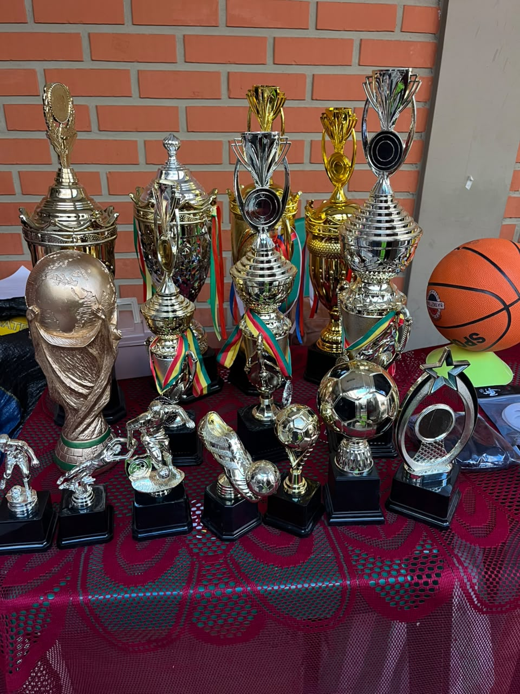
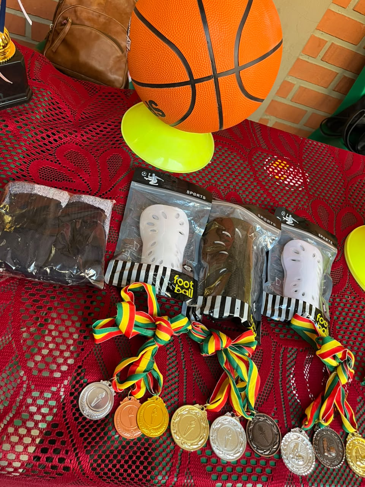
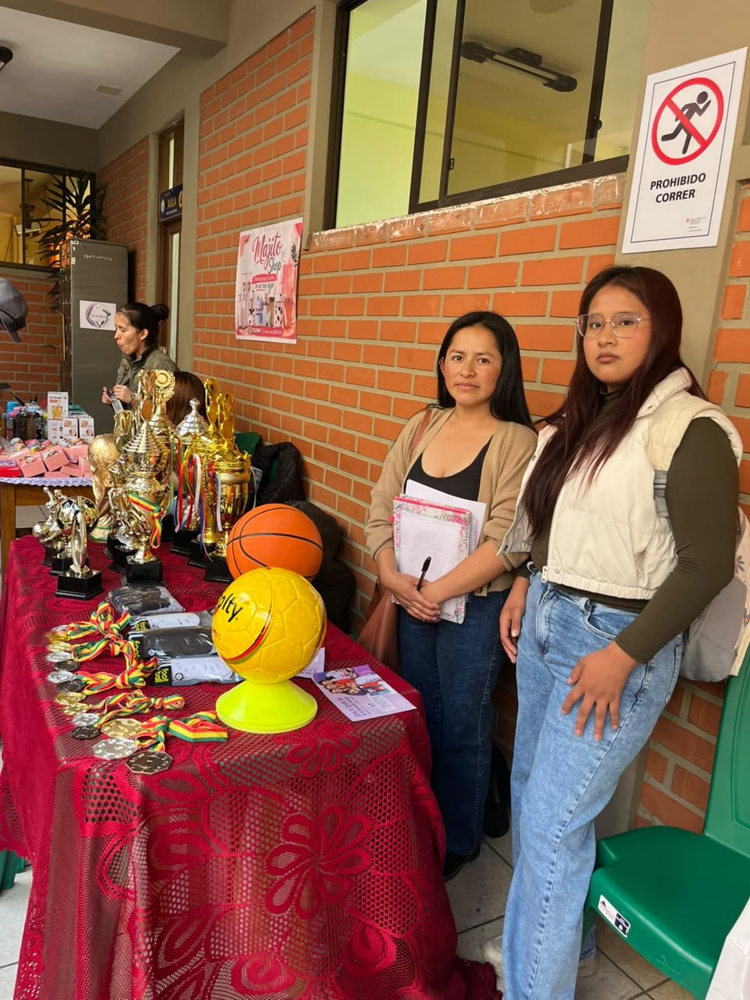

FEXPO ITSEC 2026 - ¡Bienvenidos!
FEXPO ITSEC SUCRE

En la FEXPO ITSEC Sucre se presentan diferentes emprendimientos que permiten conocer las ideas de negocio de los participantes. Entre ellos se encuentra Podium, un emprendimiento dedicado a la venta y distribución de material deportivo, que busca apoyar las actividades físicas y deportivas en instituciones educativas y comunidades.



Podium es un emprendimiento cuyo dueño es Shony Bautista, dedicado a la comercialización y distribución de materiales deportivos. El negocio funciona desde hace aproximadamente un año y comenzó con un capital inicial de 5.000 bolivianos.
Su principal actividad es distribuir material deportivo a colegios de zonas rurales y urbanas, contribuyendo al desarrollo de las actividades físicas, los campeonatos escolares y los diferentes eventos deportivos.
Entre los productos que ofrece se encuentran trofeos, medallas, balones, poleras deportivas y artículos para árbitros, entre otros materiales necesarios para la práctica del deporte. Estos productos pueden utilizarse en torneos, competencias, actos de premiación y actividades recreativas.
El objetivo de Podium es ofrecer productos útiles para deportistas, estudiantes, profesores de educación física y organizadores de campeonatos. Además, busca ampliar su variedad de artículos, llegar a más instituciones y seguir creciendo como emprendimiento.
La participación de Podium en la FEXPO ITSEC permite dar a conocer sus productos, promocionar su negocio y mostrar cómo una idea emprendedora puede convertirse en una oportunidad de crecimiento económico y apoyo al deporte.